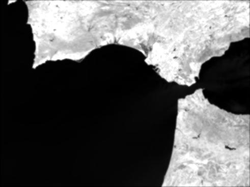

Create Filtered Band
Filtered bands are created by applying convolution or non-linear filters to the selected band. Filters are used to
perform common image processing operations e.g. sharpening, blurring or edge enhancement.
Note:
When storing a product containig a filtered band, the data of the band is not stored to the product.
Only the information how to compute the data is stored. This behavior is similar to virtual bands.
VISAT supports the following filters
- Detect Lines
Horizontal Edges, Vertical Edges, Left Diagonal Edges, Right Diagonal Edges, Compass Edge Detector,
Roberts Cross North-East, Roberts Cross North-West, Roberts Cross North-East
- Detect Gradients (Emboss)
Sobel North, Sobel South, Sobel West, Sobel East, Sobel North East
- Smooth and Blurr
Arithmetic 3x3 Mean, Arithmetic 4x4 Mean, Arithmetic 5x5 Mean,
Low-Pass 3x3, Low-Pass 5x5
- Sharpen
High-Pass 3x3 #1, High-Pass 3x3 #2, High-Pass 5x5
- Enhance Discontinuities
Laplace 3x3, Laplace 5x5
- Non-Linear Filters
Minimum 3x3, Minimum 5x5, Maximum 3x3, Maximum 5x5, Mean 3x3, Mean 5x5,
Median 3x3, Median 5x5, Standard Deviation 3x3, Standard Deviation 5x5,
Root-Mean-Squar 3x3, Root-Mean-Squar 5x5
Example images

Compass Edge Detector Filter
|

Low-Pass 5x5 Filter
|

High-Pass 3x3 #2 Filter
|

Laplace 3x3
|